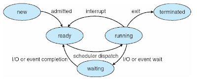

Pengertian dan Contoh dari Process Control Block
PROCESS CONTROL BLOCK (PCB) adalah struktur data yang dipakai oleh OS untuk mengelola proses.Hampir semua OS yang modern telah memuat PCB(Process Control Block) namun strukturnya berbeda-beda pada setiap OS tersebut.PCB juga memuat informasi tentang proses, yaitu: sebuah tanda pengenal proses (Process ID) yang unik dan menjadi nomor identitas, status proses, prioritas eksekusi proses dan informasi lokasi proses dalam memori. Prioritas proses merupakan suatu nilai atau besaran yang menunjukkan seberapa sering proses harus dijalankan oleh prosesor. Proses yang memiliki prioritas lebih tinggi, akan dijalankan lebih sering atau dieksekusi lebih dulu dibandingkan dengan proses yang berprioritas lebih rendah. Suatu sistem operasi dapat saja menentukan semua proses dengan prioritas yang sama, sehingga setiap proses memiliki kesempatan yang sama. Suatu sistem operasi dapat juga merubah nilai prioritas proses tertentu, agar proses tersebut akan dapat memiliki kesempatan lebih besar pada eksekusi berikutnya (misalnya pada proses yang sudah sangat terlalu lama menunggu eksekusi, sistem operasi menaikkan nilai prioritasnya).
Process Control Block ini hanya berfungsi sebagai tempat penyimpanan informasi yang dapat bervariasi dari proses yang satu dengan yang lain. Setiap proses digambarkan dalam sistem operasi oleh sebuah Process Control Block (PCB). PCB ini berisikan banyak informasi yang berhubungan dengan sebuah proses yang spesifik, yaitu pointer, status proses, program counter, CPU registers, informasi manajemen memori, informasi pencatatan, dan informasi status I/O.
Elemen - Elemen PCB Running

PCB dibagi 3 kelompok yaitu:
- Identifier : dentitas unik untuk membedakan suatu proses dengan proses lainnya.
- State : Status (kondisi) suatu proses (sedang dieksekusi, sedang diblok, dll).
- Priority : Status (kondisi) suatu proses (sedang dieksekusi, sedang diblok, dll) Priority.
- Program Counter : Alamat instruksi berikutnya yang akan dieksekusi Memory pointers.
- Memory Pointers : Alamat instruksi berikutnya yang akan dieksekusi Memory pointers.
- Pointer yang menunjuk pada alamat memori kode program dan data yang berhubungan dengan proses dan blok memori yang di-shared dengan proses lain (jika ada).
- Context data : Data yang terdapat pada register prosesor ketika suatu proses sedang dieksekusi.
- I/O Status Information : Informasi tentang permintaan terhadap I/O device yang belum terpenuhi (misal akses ke harddisk), daftar file yang sedang digunakan oleh proses, dll.
- Accounting information : Informasi tentang jumlah waktu prosesor yang telah digunakan, jumlah waktu proses, batas waktu proses, nomor urutan, dsb.
Process identification data; selalu menyertakan sebuah identifier unik untuk prosesnya (hampir selalu bernilai integer) dan, dalam sebuah sistem multiuser-multitasking, data seperti identifier proses induk, identifier pengguna, identifier grup pengguna, dll. Proses ini sangan relevan, karena itu sering digunakan untuk referensi silang tabel OS, misalnya memungkinkan untuk mengidentifikasi proses yang menggunakan device I/O, atau daerah memori.
Processor state data; adalah potongan-potongan informasi yang mendefinisikan status dari suatu proses ketika proses itu ditangguhkan, yang memungkinkan OS untuk melakukan restart proses nantinya dan masih dapat mengeksekusinya dengan benar. Hal ini selalu menyertakan isi dari register CPU tujuan.
Process control data; digunakan oleh OS untuk mengelola proses itu sendiri.
PCB berisikan banyak bagian dari informasi yang berhubungan dengan sebuah proses yang spesifik, termasuk hal-hal di bawah ini:
-
Pointer
Merupakan perubahan dinamis dimana suatu perubahan yang akan dialokasikan hanya pada saat diperlukan, yaitu setelah program di eksekusi.
-
Status Proses
Sebagaimana proses bekerja, maka proses tersebut merubah state (keadaan statis/asal). Status dari sebuah proses didefinisikan dalam bagian oleh aktivitas yang ada dari proses tersebut. Tiap proses mungkin adalah satu dari keadaan proses new, ready, running, waiting, terminated.
-
New
Status yang dimiliki pada saat proses baru saja dibuat oleh penjadwalan tingkat tinggi, tetapi belum siap melakukan eksekusi.
-
Ready
Status yang dimiliki pada saat proses siap dieksekusi oleh prosesor.
-
Running
Status yang dimiliki pada saat instruksi-instruksi dari sebuah proses dieksekusi. Proses bisa dieksekusi karena CPU tidak sedang mengerjakan tugas yang lain.
-
Waiting
Status yang dimiliki pada saat proses menunggu suatu event (kejadian), seperti penyelesaian I/O atau menerima signal.
-
Terminated
Status yang dimiliki pada saat proses telah selesai dieksekusi.
-
New
- Jika program telah selesai dieksekusi maka status dari proses tersebut akan berubah menjadi Terminated.
- Jika waktu yang disediakan oleh OS untuk proses tersebut sudah habis maka akan terjadi interupsi dan proses tersebut berstatus Ready.
- Jika suatu event (kejadian) terjadi pada saat proses dieksekusimaka proses tersebut akan menunggu event tersebut selesai dan proses berstatus Waiting.
-
Program Counter
Program Counter menunjukkan alamat berikutnya yang akan dieksekusi oleh suatu proses. Program Counter mengindikasikan address dari perintah selanjutnya untuk dijalankan dan ditambah code information pada kondisi apapun.
- CPU registers
Register bervariasi dalam setiap jumlah dan jenis, tergantung pada rancangan komputer. Register tersebut termasuk dalam accumulator, register indeks, stack pointer, general-purpose register, ditambah kode informasi pada kondisi apa pun. Beserta dengan program counter, keadaan/status informasi harus disimpan pada saat gangguan terjadi, untuk memungkinkan proses tersebut berjalan / bekerja dengan benar setelahnya.
-
Informasi Manajemen Memori
Informasi ini dapat termasuk suatu informasi sebagai nilai dari dasar dan batas register, tabel halaman, atau tabel segmen tergantung pada sistem memori yang digunakan oleh sistem operasi.
-
Informasi Pencatatan
Informasi ini termasuk jumlah dari CPU dan waktu riil yang digunakan, batas waktu, jumlah akun, jumlah job atau proses, dan banyak lagi.
Hanya satu proses yang dapat berjalan pada prosesor mana pun pada satu waktu. Namun, banyak proses yang dapat berstatus Ready atau Waiting. Ada tiga kemungkinan bila sebuah proses memiliki status Running, yaitu:
Diagram Status Proses:

References:
https://stefhannylourensia.blogspot.com/2018/11/pengertian-dan-contoh-process-control.html
https://hs32tiuntan.blogspot.com/2013/03/process-control-block-pcb.html

Dinda Putri Ramadani
Hai!!! Perkenalkan saya Dinda Putri Ramadani salah satu mahasiswi dari Universitas Dinamika Bangsa Jambi. Blog ini untuk memenuhi tugas Sistem Operasi yang diberikan oleh dosen pembimbing saya. Terima Kasih!!! xixixi